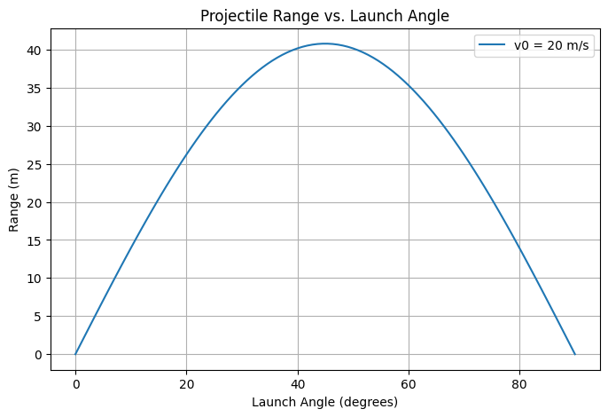
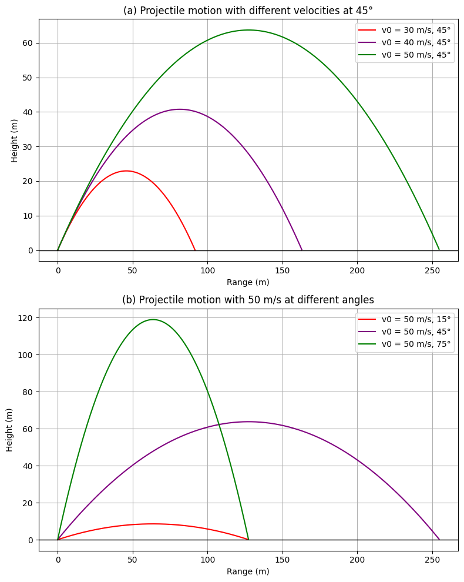

Problem 1
- Theoretical Foundation Derivation of the Equations of Motion We start with Newton's second law under the assumption of no air resistance:
📘 Derivation of the Equations of Motion
We start with Newton's Second Law under the assumption of no air resistance.
Horizontal Direction
- Acceleration:
$$ a_x = 0 $$
- Velocity:
$$ v_x = v_0 \cos(\theta) $$
- Displacement:
$$ x(t) = v_0 \cos(\theta) \cdot t $$
🔹 Vertical Direction
- Acceleration:
$$ a_y = -g $$
- Velocity:
$$ v_y = v_0 \sin(\theta) - g t $$
- Displacement:
$$ y(t) = v_0 \sin(\theta) \cdot t - \frac{1}{2} g t^2 $$
⏱ Time of Flight
The projectile lands when \( y(t) = 0 \). Solve the vertical motion equation:
Factor out \( t \):
Non-zero solution:
📏 Horizontal Range
Use the time of flight in the horizontal displacement:
Simplify using trigonometric identity
This equation represents the ideal range of a projectile as a function of the launch angle
📈 2. Analysis of the Range
🔹 Maximum Range Condition
The range
of a projectile is given by:
The maximum range occurs when:
Thus, the optimal launch angle for maximum horizontal distance (in ideal conditions) is:
🔁 Symmetry of the Range Function
The range function exhibits symmetry with respect to 45°:
This means that launching a projectile at
gives the same range as
assuming all other parameters are identical.
⚙️ Effects of Parameters
🔸 Initial Velocity
- The range increases quadratically with initial velocity:
$$ R \propto v_0^2 $$
🔸 Gravitational Acceleration
- The range is inversely proportional to gravity:
$$ R \propto \frac{1}{g} $$ - Lower gravity (e.g., on the Moon) results in longer ranges.
🔸 Launch Angle
- The dependence on angle is non-linear due to the sine function:
$$ R \propto \sin(2\theta) $$
- This leads to a bell-shaped range vs. angle graph, peaking at 45°.
ℹ️ These relationships hold under idealized conditions (flat ground, no air resistance). Real-world factors like drag and terrain can alter the outcomes significantly.
🌍 3. Practical Applications
Projectile motion isn't just a theoretical exercise—it appears across a wide range of real-world domains. Understanding how launch angle and other factors affect motion is crucial in various disciplines.
🎯 Sports
- Application: Optimizing angles for throwing, kicking, or hitting balls.
- Examples:
- Determining the best angle for a soccer free kick.
- Adjusting basketball shot arcs for consistent scoring.
- Goal: Maximize distance or precision using ideal angle (close to 45° without air resistance).
🛠️ Engineering
- Application: Design and analysis of projectile or payload launches.
- Examples:
- Military ballistics and artillery targeting.
- Launch systems for drones or mechanical payloads.
- Focus: Controlling trajectory, optimizing for range and accuracy.
🌌 Astrophysics
- Application: Trajectory planning for celestial bodies or spacecraft.
- Examples:
- Launching satellites into orbit.
- Interplanetary mission path calculations (e.g., Moon landings, Mars probes).
- Note: In space, gravity and orbital mechanics replace simple parabolic motion.
⚠️ Non-Ideal Conditions
Real-world projectile motion is affected by several factors not present in idealized models:
🌬️ Air Resistance
- Effect: Reduces both range and height.
- Behavior: More significant at high speeds or large surface areas.
🏔️ Uneven Terrain
- Effect: Alters the landing point and effective range.
- Solution: Adjust the motion model to account for elevation differences.
💨 Wind Effects
- Effect: Causes lateral or directional drift.
- Complexity: Requires vector addition of wind velocity and projectile motion.
📌 These considerations must be included for realistic simulations and accurate predictions in applied physics and engineering.
💻 4. Implementation (Python)
The following Python script simulates the relationship between launch angle and projectile range under idealized conditions (no air resistance, flat terrain).
📌 Python Code: Projectile Range vs. Angle of Projection
import numpy as np
import matplotlib.pyplot as plt
def projectile_range(v0, g):
angles = np.linspace(0, 90, 100) # Angles in degrees
angles_rad = np.radians(angles) # Convert to radians
ranges = (v0**2 * np.sin(2 * angles_rad)) / g
plt.figure(figsize=(8,5))
plt.plot(angles, ranges, label=f'v0 = {v0} m/s')
plt.xlabel('Launch Angle (degrees)')
plt.ylabel('Range (m)')
plt.title('Projectile Range vs. Launch Angle')
plt.legend()
plt.grid()
plt.show()
# Example parameters
v0 = 20 # Initial velocity in m/s
g = 9.81 # Gravity in m/s^2
projectile_range(v0, g)

📈 Graphical Insights
Understanding the graph of Projectile Range vs. Launch Angle reveals important physical behaviors of motion.
🔁 Symmetry About 45°
- The curve is symmetric about:
$$ \theta = 45^\circ $$
- This means:
$$ R(\theta) = R(90^\circ - \theta) $$
- Launching at 30° or 60° produces the same range, assuming identical conditions.
🚀 Effect of Initial Velocity \( v_0 \)
- As initial velocity increases, the range curve scales upward (quadratic relation).
$$ R \propto v_0^2 $$
- The optimal launch angle remains:
$$ \theta = 45^\circ $$
🌬️ Real-World Effects: Air Resistance
- In real-life scenarios:
- The curve flattens (range decreases).
-
The peak shifts left, meaning the optimal angle is often < 45°.
-
Why?
- Air drag reduces both speed and range.
- The projectile loses energy faster at higher arcs.
✅ These graphical patterns are essential when applying projectile theory to sports, aerospace, and simulation environments.
⚠️ Limitations & Extensions
While the ideal projectile motion model is elegant and insightful, it makes several assumptions that limit its real-world applicability.
❌ Limitations of the Ideal Model
-
No Air Resistance
Ignores aerodynamic drag, which significantly affects motion in real-life scenarios. -
No Wind or Spin
Omits external influences like wind gusts or ball/projectile spin. -
Flat Terrain Assumption
Assumes the projectile is launched and lands at the same height on flat ground. -
Constant Gravitational Field
Assumes gravity remains uniform, which may not hold true over large distances or altitudes.
🔧 How to Extend the Model
- Include Air Resistance
Use numerical methods like Euler or Runge-Kutta to integrate drag force:
$$ F_{\text{drag}} = -kv^2 $$
- Model Uneven Terrain
Define a dynamic ground height function
to represent variable landing surfaces.
- Add Wind Effects
Incorporate wind velocity as an additional horizontal vector component:
$$ v_{\text{effective}} = v_{0,x} + v_{\text{wind}} $$
🧠 These extensions bring the model closer to real-world physics and are especially useful in simulations for sports, aerospace, and robotics.
🔢 Numerical Simulations for Non-Ideal Cases
To simulate projectile motion under drag or other real-world factors, numerical methods are essential. Below is a guide on how to simulate projectile motion incorporating drag force using Python.
📌 Sample Pseudocode for Projectile Motion with Drag
We can model the motion of a projectile subject to air resistance using the following equations:
- Horizontal Motion (x):
$$ \frac{d v_x}{dt} = -k v_x $$
- Vertical Motion (y):
$$ \frac{d v_y}{dt} = -g - k v_y $$
- Position Update:
$$ \frac{dx}{dt} = v_x, \quad \frac{dy}{dt} = v_y $$
Where:
and
are the velocity components in the horizontal and vertical directions.
is gravitational acceleration.
is the drag coefficient (depends on air density, shape, and size of the projectile).
🔧 Using Numerical Solvers
We can use libraries like SciPy's odeint or solve_ivp to solve these differential equations. Here's a rough outline of how to implement it:
import numpy as np
import matplotlib.pyplot as plt
def projectile_motion(v0, theta, g=9.81, dt=0.01):
"""Compute projectile motion given initial velocity and angle."""
theta = np.radians(theta)
v0x = v0 * np.cos(theta)
v0y = v0 * np.sin(theta)
t_flight = (2 * v0y) / g
t = np.arange(0, t_flight, dt)
x = v0x * t
y = v0y * t - 0.5 * g * t**2
return x, y
# Define initial velocities and angles for both plots
velocities_a = [30, 40, 50]
angles_a = [45, 45, 45]
velocities_b = [50, 50, 50]
angles_b = [15, 45, 75]
# Create figure and subplots
fig, axs = plt.subplots(2, 1, figsize=(8, 10))
colors = ['red', 'purple', 'green']
def plot_projectiles(ax, velocities, angles, colors):
for v0, theta, color in zip(velocities, angles, colors):
x, y = projectile_motion(v0, theta)
ax.plot(x, y, color=color, label=f'v0 = {v0} m/s, {theta}°')
ax.axhline(0, color='black', linewidth=1) # Ground line
ax.set_xlabel("Range (m)")
ax.set_ylabel("Height (m)")
ax.legend()
ax.grid()
# Plot (a)
plot_projectiles(axs[0], velocities_a, angles_a, colors)
axs[0].set_title("(a) Projectile motion with different velocities at 45°")
# Plot (b)
plot_projectiles(axs[1], velocities_b, angles_b, colors)
axs[1].set_title("(b) Projectile motion with 50 m/s at different angles")
plt.tight_layout()
plt.show()
